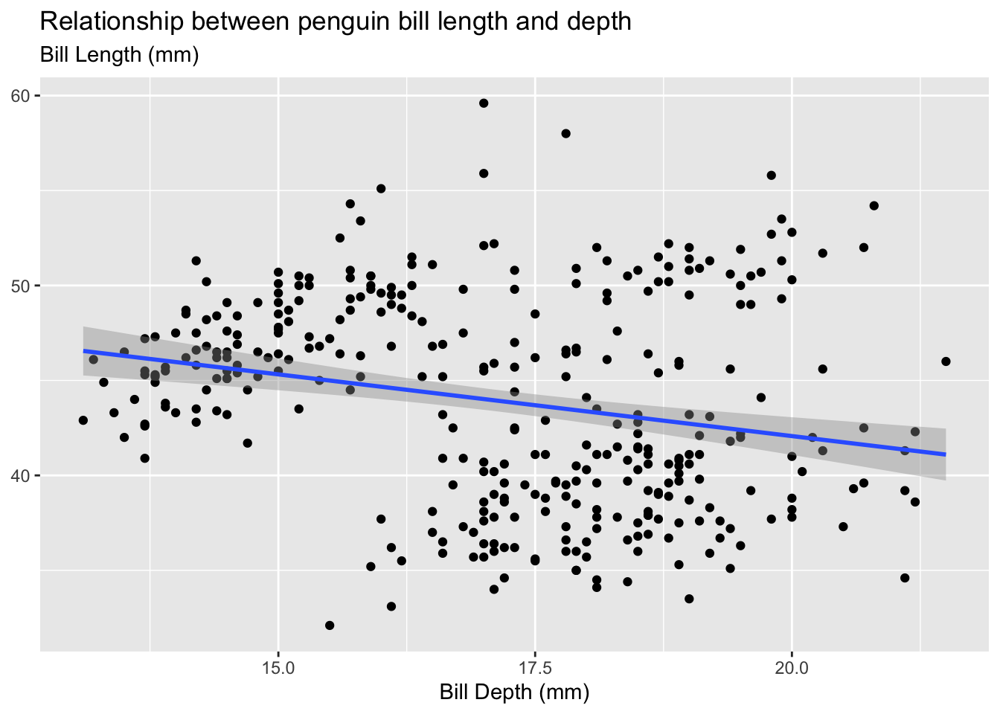

Pull out relevant model information using the broom package
Conduct simulations illustrating statistical behaviors of regression estimates
📖 Required Readings: 60 min
2 Simple Linear Regression
You now have the skills to import, wrangle, and visualize data. All of these tools help us prepare our data for statistical modeling if that is desired for your analyses. While we have sprinkled some formal statistical analyses throughout the course, in this section we will be formally reviewing Linear Regression. First let’s review simple linear regression. Linear regression models the linear relationship between two quantitative variables.
To demonstrate linear regression in R, we will be working with the penguins data set.
head(penguins) |>kable()
species
island
bill_length_mm
bill_depth_mm
flipper_length_mm
body_mass_g
sex
year
Adelie
Torgersen
39.1
18.7
181
3750
male
2007
Adelie
Torgersen
39.5
17.4
186
3800
female
2007
Adelie
Torgersen
40.3
18.0
195
3250
female
2007
Adelie
Torgersen
NA
NA
NA
NA
NA
2007
Adelie
Torgersen
36.7
19.3
193
3450
female
2007
Adelie
Torgersen
39.3
20.6
190
3650
male
2007
When conducting linear regression with tools in R, we often want to visualize the relationship between the two quantitative variables of interest with a scatterplot. We can then use either geom_smooth(method = "lm") (or equivalently stat_smooth(method = "lm") to add a line of best fit (“regression line”) based on the ordinary least squares (OLS) equation to our scatter plot. The regression line is shown in a default blue line with the standard error uncertainty displayed in a gray transparent band (use se = FALSE to hide the standard error uncertainty band). These visual aesthetics can be changed just as any other plot aesthetics.
penguins |>ggplot(aes(x = bill_depth_mm, y = bill_length_mm ) ) +geom_point() +geom_smooth(method ="lm") +labs(x ="Bill Depth (mm)",subtitle ="Bill Length (mm)",title ="Relationship between penguin bill length and depth" ) +theme(axis.title.y =element_blank())

In simple linear regression, we can define the linear relationship with a mathematical equation given by:
\[y = a + b\cdot x\]
where
\(y\) are the values of the response variable,
\(x\) are the values of the explanatory/predictor variable,
\(a\) is the \(y\)-intercept (average value of \(y\) when \(x = 0\)), and
\(b\) is the slope coefficient (for every 1 unit increase in \(x\), the average of \(y\) increases by b)
In statistics, we use slightly different notation to denote this relationship with the estimated linear regression equation:
Note that the “hat” symbol above our response variable indicates this is an “estimated” value (or our best guess).
We can “fit” the linear regression equation with the lm function in R. The formula argument is denoted as y ~ x where the left hand side (LHS) is our response variable and the right hand side (RHS) contains our explanatory/predictor variable(s). We indicate the data set with the data argument and therefore use the variable names (as opposed to vectors) when defining our formula. We name (my_model) and save our fitted model just as we would any other R object.
my_model <-lm(bill_length_mm ~ bill_depth_mm, data = penguins)
Now that we have fit our linear regression, we might be wondering how we actually get the information out of our model. What are the y-intercept and slope coefficient estimates? What is my residual? How good was the fit? The code options below help us obtain this information.
This is what is output when you just call the name of the linear model object you created (my_model). Notice, the output doesn’t give you much information and it looks kind of bad.
This is what is output when you use the summary() function on a linear model object. Notice, the output gives you a lot of information, some of which is really not that useful. And, the output is quite messy!
summary(my_model)
Call:
lm(formula = bill_length_mm ~ bill_depth_mm, data = penguins)
Residuals:
Min 1Q Median 3Q Max
-12.8949 -3.9042 -0.3772 3.6800 15.5798
Coefficients:
Estimate Std. Error t value Pr(>|t|)
(Intercept) 55.0674 2.5160 21.887 < 2e-16 ***
bill_depth_mm -0.6498 0.1457 -4.459 1.12e-05 ***
---
Signif. codes: 0 '***' 0.001 '**' 0.01 '*' 0.05 '.' 0.1 ' ' 1
Residual standard error: 5.314 on 340 degrees of freedom
(2 observations deleted due to missingness)
Multiple R-squared: 0.05525, Adjusted R-squared: 0.05247
F-statistic: 19.88 on 1 and 340 DF, p-value: 1.12e-05
The tidy() function from the {broom} package takes a linear model object and puts the “important” information into a tidy tibble output.
That’s nice!
library(broom)broom::tidy(my_model) |>kable()
term
estimate
std.error
statistic
p.value
(Intercept)
55.0673698
2.5159514
21.887295
0.00e+00
bill_depth_mm
-0.6498356
0.1457327
-4.459093
1.12e-05
If you are sad that you no longer have the statistics about the model fit (e.g., R-squared, adjusted R-squared, \(\sigma\)), you can use the glance() function from the broom package to grab those!